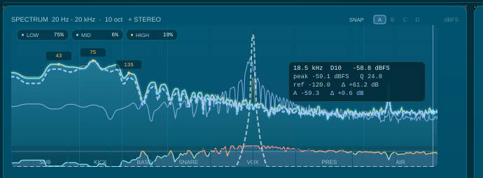
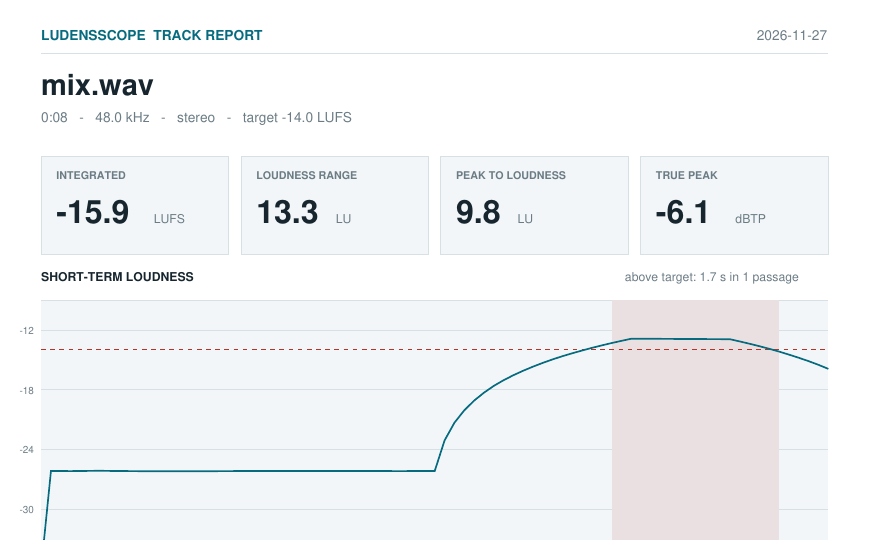

PRESS KIT
LudensScope — press kit
A free stereo analyser for macOS, Windows and Linux in VST3, AU, AAX, CLAP and standalone formats. Everything needed for a write-up: boilerplate, facts, screenshots and contact.
Boilerplate
Short (one sentence):
LudensScope is a stereo analyser for VST3, AU, AAX, CLAP and standalone hosts that combines a spectrum and waterfall, ITU-R BS.1770-4 loudness metering, scopes, a voltage-proportional VU and a reference workflow — free for the metering, €19 for the reference features.
Long (one paragraph):
LudensScope is an independent stereo analyser for mixing and mastering, developed by Alek Ludens. It puts a 2048–16384-point FFT spectrum and waterfall, ITU-R BS.1770-4 loudness (momentary, short-term, integrated, LRA, PLR and true peak), goniometer, oscilloscope, vectorscope and a voltage-proportional VU meter into one window. The free Lite edition includes the full metering set with no time limit, no account and no telemetry. The PRO edition (€19, one offline licence key) adds four reference slots with level matching, a p10–p90 analysis band, ORIG/REF monitoring, EQ suggestions, A-D snapshots, gain-staging guides and seven colour themes. It runs on macOS, Windows and Linux as VST3, AU, AAX, CLAP and a standalone application.
Fact sheet
| Product | LudensScope |
| Developer | Alek Ludens, independent |
| Category | Audio analyser / metering, mixing and mastering |
| Formats | VST3, AU, AAX, CLAP, standalone application |
| Platforms | macOS (universal, Apple Silicon native), Windows 10/11 (64-bit), Linux x86_64 (.deb) |
| Editions | Lite — free, no time limit. PRO — €19, one offline licence key |
| Latest version | 1.3.1, 27 November 2026 |
| Website | ludensscope.pages.dev |
| Source & releases | github.com/ltillegal/ludensscope |
| KVR | kvraudio.com/product/ludensscope-by-alek-ludens |
| Press contact | alek.ludens@gmail.com |
What is in it
- Spectrum and waterfall — 2048–16384 FFT, Hann / Blackman-Harris / flat-top windows, peak markers, target curves, PNG export.
- Loudness — ITU-R BS.1770-4: momentary (400 ms), short-term (3 s), gated integrated, LRA, PLR, 4× oversampled true peak, correlation and a 60-second history.
- VU — voltage-proportional needle, −20…+3 scale, 0 VU = +4 dBu = 1.228 V RMS, calibrated to −18 dBFS (EBU R68) or −20 dBFS (SMPTE RP 155); ballistics ~500 ms, input smoothing 40/80/150 ms.
- Reference (PRO) — four slots, average curve with a p10–p90 band, LUFS level matching, ORIG/REF monitoring, up to four EQ suggestions.
- Gain staging (PRO) — 0 / −6 / −12 dBFS and 0 VU lines drawn in both the spectrum and the oscilloscope.
- Per-band stereo field (PRO) — side/mid width per band with a correlation outline: red where a band goes anti-phase, cyan where it is mono-compatible.
- System audio (standalone, macOS) — the app can meter what the computer plays — a player, a browser, a streaming service — without a DAW, using ScreenCaptureKit.
- Track report (PRO) — drop an audio file and get a one-page PDF: integrated LUFS, LRA, PLR, true peak, short-term loudness against the target with every passage above it, average spectrum and band balance.
- Seven palettes and UI scale 100/125/150 % (full set in PRO, Lite ships the Blue palette).
What's new in 1.3.1
Menus and tooltips are drawn with the same rounded corners as the interface — they were JUCE defaults, plain rectangles — and the correlation bar's fill no longer paints square ends inside its rounded track.
What's new in 1.3.0
The standalone app can now capture the computer's own audio output, so any track playing anywhere — a streaming service, a browser, a player — can be metered and used as a reference without a DAW. It runs through the normal metering path, so the stereo field, the reference workflow and the report all work on live system audio. macOS 13+; Windows and Linux still need an external loopback or a monitor source.
What's new in 1.2.0
Per-band stereo field under the spectrum: the strip height is the side/mid ratio of each band, the outline colour is correlation, and hovering reports both for the band under the cursor. Track report: drop a file onto the window and it is analysed offline into a one-page vector PDF — loudness numbers, the short-term timeline against the target with every excursion marked, the average spectrum and the band balance. The update check now runs by itself, quietly, once a day.
Screenshots
Click any image for the full-size file. Everything below is free to use in articles about LudensScope; please keep the interface intact and do not crop out the header.






Logo
logo.png — the shield mark on a transparent background. Please don’t recolour it or add effects.

Review access
If you need a PRO key to write about the reference workflow, email alek.ludens@gmail.com with the publication and a link — happy to send one.
About the developer
Alek Ludens is an independent developer. LudensScope is built with JUCE in C++ and ships without telemetry, accounts or subscription: the licence is verified offline with an RSA key.
Missing something? Need a specific screenshot, a 15-second video or a comment — write to alek.ludens@gmail.com.